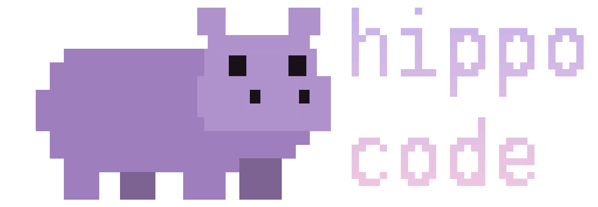

a lean coding agent · experimental MTPLX for Qwen3.6-27B-MTPLX-Optimized-Speed · built with Rust · latest release
A single curl line. No daemon, no auth, no MCP.
cargo install --git https://github.com/daniel-farina/hippo-code
git clone https://github.com/daniel-farina/hippo-code
cd hippo-code
cargo build --release
./target/release/hip --help
# grab the latest release binary
curl -LO https://github.com/daniel-farina/\
hippo-code/releases/latest/download/hip
chmod +x hip && mv hip /usr/local/bin/
# self-updater: pulls the latest
# release binary and replaces yours
hip --update
export MLX_CODE_URL=http://127.0.0.1:8088/v1
export MLX_CODE_MODEL=mtplx-qwen36-27b-optimized-speed
hip
# no MTPLX yet? hip will offer to
# clone, install, download the model,
# start the server, then drop into chat
hip
A tight subset of opencode's agent loop, without the parent-agent prompt overhead.
read, grep, edit, bash, list, glob, search, diff, tree, peek_log. Each is a JSON-schema spec sent to the model plus a small local executor. Gitignore-aware where it matters.<think> blocks render in a dim panel above the response. Hide with --hide-thinking or MLX_CODE_SHOW_THINKING=0; verbose with -v to also get full tool output and stats.--dry-run makes edit and bash return (dry_run) would… previews instead of writing or executing - the agent loop still runs end-to-end so you can validate plans safely.tok / lines / tok-s / ttft / total bar to the bottom row while output streams above. Falls back to inline \r if the terminal can't, or with MLX_CODE_NO_STICKY=1.hip --inspect-prompt for a live per-tool breakdown.Launch into chat. Slash or colon both work. Tab-completes after / or :.
$ hip — a lean coding agent · MTPLX · qwen3.6-27b — hip> /help /help show this help (or :help) /tools list registered tools and their schemas /context token usage vs the 64K window (input/completion split) /new new conversation - clears history & rotates session id /reset clear history but keep session id (warm prefix cache) /theme [name] hippo · river · light · mono (current: hippo) /tps [N] tok/s sparkline for last N runs /overhead prompt-overhead breakdown (system + 10 tools) /dry-run on|off preview edits/bash without writing /peek [N] last N runs from runs.jsonl /quit exit (also: exit, quit, bye, double Ctrl-C) hip> /context context window: 12,398 / 65,536 tokens (19%) input: 9,217 tok completion: 3,181 tok turns: 3 hip> refactor src/agent.rs to extract the tool dispatcher [ … streamed thinking + edits … ] hip> /new new conversation. session id rotated; prefix cache reset. hip> /theme light theme: hippo → light